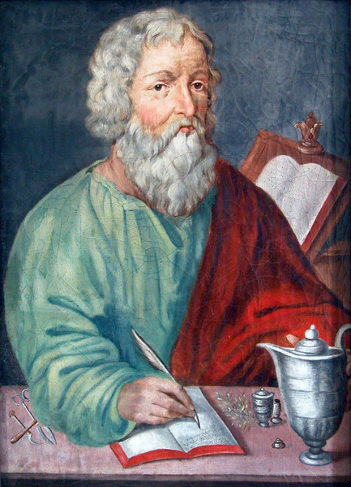

Welcome to the Mathematical World!
Hippocrates of Chios
Early Greek Pioneer of Geometry
Hippocrates of Chios (c. 470–410 BC) was an early Greek mathematician whose work marked a turning point in the systematic study of geometry. Born on the island of Chios, he began his career as a merchant engaged in maritime trade. According to ancient sources, his life took a dramatic turn after he was defrauded during a voyage, losing his cargo to piracy or deceit. Determined to rebuild his life, he traveled to Athens, where he immersed himself in mathematics and quickly gained recognition for his remarkable talent in geometric reasoning.
Mathematical Achievements
Hippocrates became one of the first known individuals to compile a geometric textbook—an early precursor to Euclid’s Elements—in which he organized the geometric knowledge of his time into a logically ordered sequence of theorems and proofs. This work applied deductive reasoning rather than relying solely on visual intuition, setting a standard for mathematical rigor that influenced generations of Greek mathematicians. Although his original text is lost, fragments and descriptions preserved by later commentators such as Proclus and Simplicius confirm that Hippocrates established a structured foundation for geometry.
The Quadrature of Lunes
Hippocrates is best remembered for his work on the quadrature of lunes, a remarkable attempt to bridge straight-line geometry with curved figures. The term “lune” refers to a crescent-shaped area bounded by two circular arcs. While the classical problem of squaring the circle—constructing a square of the same area as a given circle using only a compass and straightedge—was ultimately proven impossible in modern mathematics (due to the transcendence of \( \pi \)), Hippocrates discovered that certain specific lunes could be exactly squared.
For example, if a right triangle has a hypotenuse of length \( c \) and legs \( a \) and \( b \), and we construct semicircles on each side, the area of the lune on the hypotenuse equals the combined area of the two lunes on the legs. This follows from the Pythagorean relationship:
\( a^2 + b^2 = c^2 \)
and the area of a semicircle of diameter \( d \) being \( \frac{\pi d^2}{8} \). By rearranging these areas, Hippocrates showed that certain lunes had the same area as a given triangle, achieving an exact quadrature without approximations.
Other Contributions
Beyond lunes, Hippocrates worked on the properties of circles, proportions, and the method of reduction—breaking complex geometric problems into simpler, solvable ones. This approach anticipated techniques later formalized in Greek mathematics and remains a fundamental strategy in problem-solving today. His methods provided a bridge between earlier empirical observations and the formal axiomatic systems that would later define the discipline.
Legacy and Influence
Although none of Hippocrates’ writings survive in their original form, his influence can be traced through the works of later mathematicians. Euclid’s Elements adopted the structured, theorem-proof format that Hippocrates helped pioneer, while Archimedes and Apollonius benefited from the conceptual shift toward rigorous abstraction. Hippocrates’ achievements represented a move away from practical measurement toward theoretical mathematics as an autonomous, logical science. His name remains permanently associated with the earliest successful attempts to measure curved areas and with the intellectual transformation of Greek geometry into a deductive discipline.